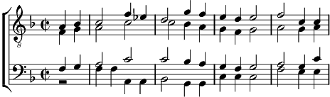

Refrain:
Le pays que j'aime nous vient d'autrefois
Il connut la peine. la nuit et le froid
Mais l'aube ramène l'audace et la foi
Le pays que j'aime va droit devant soi. (bis)
1. Emotion, mariage, on vieillissait plus tôt,
La maison, les ouvrages étaient notre fardeau.
Il fallait, quand l'orage tombait sur les coteaux
Veiller sur les berceaux.
Il fallait du courage pour se lever si tôt.
Refrain
2. On bêchait notre terre, un jour on l'a vendue.
On a fait quelques guerres, gagnées, aussi perdues.
Les chansons de mon père qui nous tombaient dessus
On ne les chante plus.
Mes amis de naguère, que sont-ils devenus ?
Refrain
Coda:
Droit devant, Droit devant ... Soi.